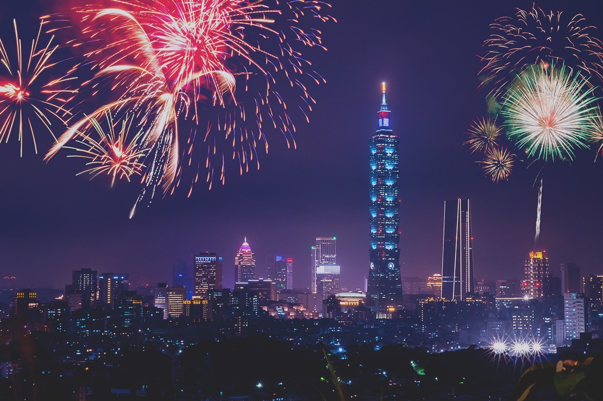
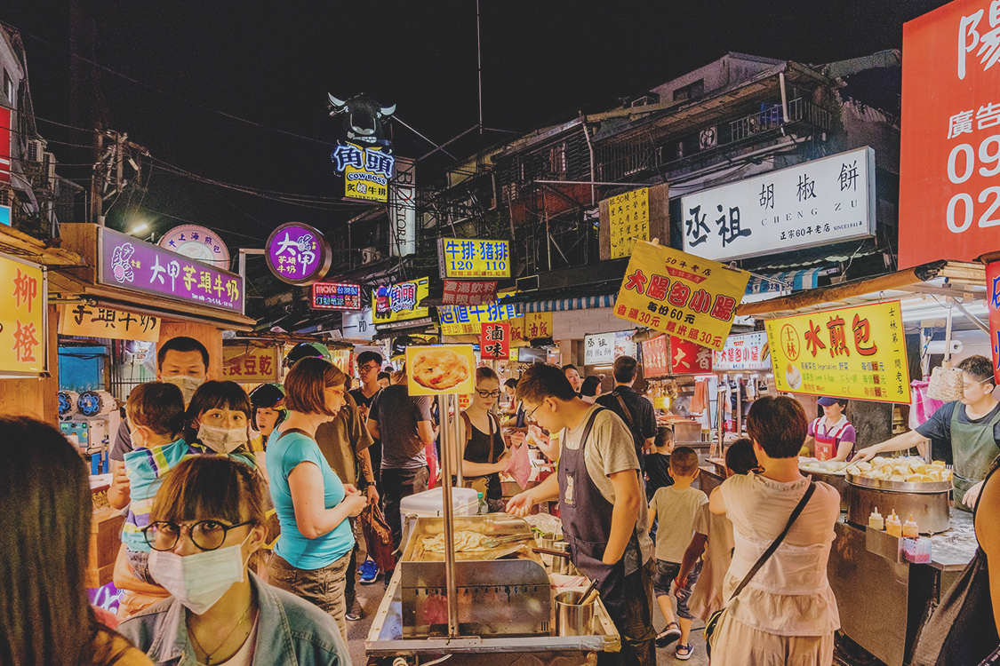

여행을 가기에 늦은 때란 없습니다. 그리고 여행을 계획하고 준비하는 그 순간 모두가 여행이란 선물에 포함되죠. 바쁜 직장인이 휴가를 따로 내지 않고도 마음껏 즐길 수 있는 대만여행을 이야기해보려고 합니다. 오늘이 바로 대만 여행을 떠날 때입니다.
여행계획은 무엇부터 시작될까요? 제일 먼저 항공권, 그 다음에 숙소를 예약하죠. 그리고 고민합니다. 얼마를 환전해야 할까? 현지 물가도 고려해야 하고 거기서 뭘 먹고 뭘 살지까지 다 고민하다 보면 머리가 아프죠. 하루 10만원 정도만 잡으면 되나? 그럼 교통비는? 쇼핑은? 고민하지 마세요. 웨이즈가 알려드릴 게요!
대만 달러 TWD, 한국 물가와 비슷해요
돈을 세는 단위는 TWD(NTD)이며, New Taiwan Dollar의 약자입니다. 현재 1TWD는 우리나라 돈으로 38~40원정도 된답니다. 물가는 우리나라와 비슷하지만 스트릿 푸드나 교통비는 매우 저렴한 편입니다.
참 잘되어 있네, 이나라 대중교통
대만은 비행 시간도 짧고 교통이 잘되어 있어서 자유여행하기 참 좋은 곳입니다. 한국의 티머니와 같은 ‘이지카드’를 주로 사용하죠. 보증금100TWD를 포함해서 300~500TWD를 충전해서 교통부터 편의점 이용까지 편하게 즐길 수 있습니다.
지하철이나 버스가 불편하면 대만의 택시를 이용해보세요. 택시 기본요금 첫1.3km에 70TWD이고 200m 혹은 8초마다 5TWD, 밤11시부터 할증이 붙습니다. 결론적으로 3박4일 이지카드 500TWD(보증금 포함)+@로 총 700TWD정도!
먹을 거리 가득한 대만여행
새로운 음식에 도전하는 것을 좋아한다면 주목하세요. 대만은 여러분의 뱃속을 즐겁게 채워줄 곳입니다. 대만은 확실히 물가가 저렴한 편이라 부담없이 마음껏 먹방 여행을 즐길 수 있습니다.
연어초밥(190TWD), 딘타이펑(370TWD)등 한국인에게 유명한 레스토랑은 국내 물가와 비슷하지만 대만의 꽃은 바로 밤이 화려한 야시장이죠. 식비는 비싸봤자 150TWD(한화 약 7천원)정도라고 생각하시면 됩니다. 밀크티나 찌파이(닭튀김), 오아지엔(굴전) 같은 음식은 50~70TWD로 한화 3천원 정도입니다. 3박 4일동안 1인당 2500~3000TWD(한화 10만원 정도)면 충분히 행복할 수 있다는 거죠♥️
마사지도 받고 관광도 합시다
대만은 여러 나라의 문화를 거부감없이 흡수한 나라로 다양한 볼거리가 공존합니다. 대만의 우뚝 솟은 랜드마크 타이페이101이 대표적이죠. 현대적인 모습부터 전통적인 모습까지~ 고궁박물관, 지우펀 등도 빼놓을 수 없죠!
홍마오성 80TWD, 임가화원 80TWD, 천등 200TWD, 예류 80TWD, 타이페이101 530TWD 등으로 입장료는 참고하세요! 대만의 발마사지는 여행중 피로를 녹일 수 있는 최고의 선택입니다. 여행에 마사지가 빠질 수 없겠죠? 평균 500~800TWD로 피로를 싹 녹일 수 있으니 쉬엄쉬엄 즐겨보아요😊
총 정리!
교통비 700TWD
관광비 1000TWD
쇼핑 1500TWD
식비 3000TWD
마사지 800TWD
총 합계 7000TWD (3박4일 1인기준)
(상기 금액은 현지의 상황과 여행 스타일에 따라 차이가 발생할 수 있습니다.)